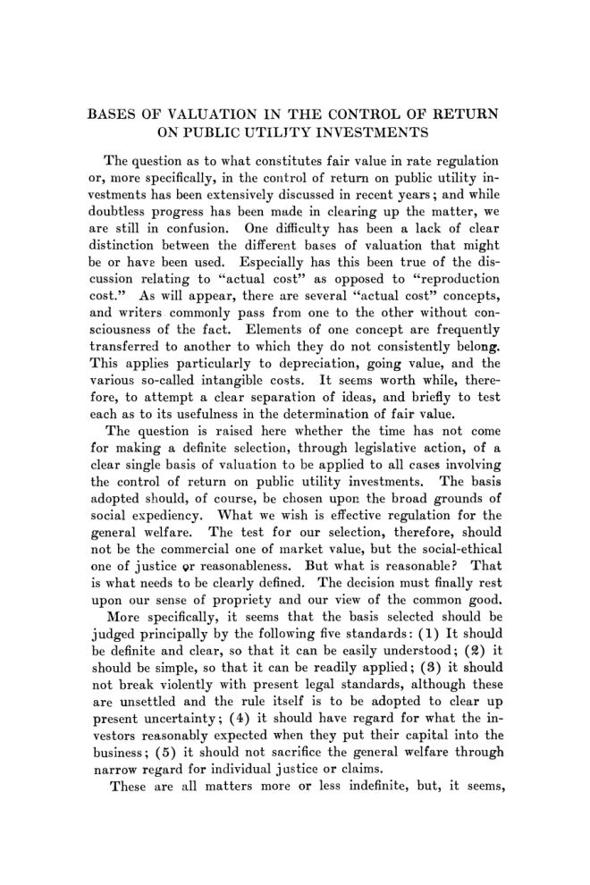

Bauer e a pergunta de que depende toda tarifa regulada: valor de quê?
Leitura: 8 min
John Bauer separa os conceitos de sacrifício do investidor dos de avaliação da propriedade e defende uma regra única para as concessionárias: custo de instalação, líquido de depreciação, aplicado igualmente a todas as empresas.


Imagine-se um velho bonde de tração animal incluído no inventário de uma empresa de bondes elétricos por US$ 5.000, o preço de um carro novo. Se a avaliação parar aí, a empresa passa a ter direito a um retorno anual sobre um objeto que quase não serve mais. Se dela se deduzirem US$ 4.500 de depreciação, sobram US$ 500, o que o carro ainda vale em serviço ou como sucata. O exemplo é de John Bauer, e resume por que, para ele, a escolha da base de avaliação não é uma questão técnica menor.
O artigo, no número de setembro de 1916 da American Economic Review, trata do problema central da regulação de serviços públicos: se o Estado limita o retorno das concessionárias, precisa dizer sobre que valor esse retorno é calculado. Bauer, de Princeton, afirma que a discussão está confusa porque se passa de um conceito de custo efetivo para outro sem perceber, e porque depreciação, valor de empresa em funcionamento e custos intangíveis são transplantados de um conceito para outro onde não cabem.
Que critérios uma base de avaliação deve cumprir?
Bauer propõe que o legislador escolha uma única base, aplicada a todos os casos, e que a escolha siga a conveniência social, e não o valor de mercado. O teste é ético e social: o que é razoável. São cinco critérios. A base deve ser definida e clara; simples de aplicar; não deve romper violentamente com os padrões legais vigentes, por incertos que sejam; deve respeitar o que os investidores razoavelmente esperavam ao aplicar o capital; e não deve sacrificar o bem-estar geral por excesso de atenção a reivindicações individuais.
O argumento contra o exame caso a caso é administrativo. Se cada avaliação considerar as circunstâncias particulares da empresa, as comissões ficam soterradas em detalhes, como, diz o autor, já estavam, e a regulação vira um procedimento espasmódico. Numa nota, Bauer resume o seu programa: política de avaliação fixada em lei, avaliação de todos os investimentos existentes, registro do resultado nos livros, retorno definido sobre esse valor, e lucro acima dele transferido ao poder público como pagamento especial pela concessão.
Quais são as bases possíveis?
A distinção fundamental, quase sempre esquecida, é entre dois grupos. Os conceitos de sacrifício do investidor olham a história: o dinheiro posto na empresa pela emissão de títulos, chamado de sacrifício primário; esse valor mais os lucros reinvestidos, o sacrifício direto; e o sacrifício líquido total, que soma ao direto as deficiências passadas de retorno e subtrai os excessos. Os conceitos de avaliação olham a propriedade existente: custo de reprodução a preços atuais e custo de instalação aos preços pagos na época, cada um bruto ou líquido de depreciação.
Outras ideias são descartadas logo. Valor nominal dos títulos e valor contábil dos ativos dariam resultados absurdos onde houve emissão sem investimento real. Valor de mercado dos títulos e valor de empresa em funcionamento dependem da lucratividade e capitalizariam contra o público as tarifas altas já cobradas, inaceitável onde o monopólio é permitido. E o custo de reproduzir a planta mais eficiente possível, defendido por engenheiros, seria todo hipotético: o público pagaria por um serviço ideal sem recebê-lo.
Por que não usar o que os investidores de fato aplicaram?
O sacrifício primário é simples, mas ignora o reinvestimento. Duas empresas com a mesma história, uma que reteve lucros e outra que distribuiu tudo e emitiu novos títulos, teriam bases muito diferentes; seria, nas palavras do autor, tomar a aparência pela substância. O sacrifício direto corrige isso e seria o padrão mais justo, mas exige contabilidade confiável desde a fundação. Era comum lançar obras como despesa, e despesa como obra; reconstruir as contas, em muitos casos, equivaleria a inventá-las.
O sacrifício líquido total leva a ideia ao limite: retorno justo e nada mais, desde o início, com o excesso tratado como retirada de capital e a deficiência como aporte. Bauer o considera um ideal para o futuro, mas inaplicável ao passado. Romperia com o direito vigente, apagaria o capital de empresas que distribuíram grandes lucros e, em alguns casos, criaria uma dívida delas com o público. Observa ainda que a regra de Nova York soma as deficiências passadas, como valor de empresa em funcionamento, sem subtrair os excessos.
“Por que não fechar a cortina sobre todos os retornos passados?” (“Why not draw a curtain on all past returns”)
Por que o custo de reprodução não serve?
O custo de reprodução bruto é a base que as empresas reivindicam e, com os preços altos da época, daria a maior avaliação possível. As empresas ainda pedem retorno sobre bens instalados pelo poder público, terras recebidas em concessão, valor de empresa em funcionamento e propriedade já retirada de uso; nada disso, diz Bauer, pertence a uma avaliação da propriedade atual. A objeção de fundo é que a base incluiria valores que os investidores não podiam razoavelmente esperar.
O caso decisivo é o das ferrovias. Pouco se pagou pelas faixas de domínio, recebidas de graça ou compradas a preço de terra agrícola; com a valorização, a diferença seria enorme. Bauer pergunta se alguém, ao investir, esperava retorno sobre a alta do preço da terra, e se aceitaria uma base menor caso os preços tivessem caído. A versão líquida, custo de reprodução menos depreciação, era a mais usada pelos tribunais e resolve o problema do inventário inflado, mas mantém as terras valorizadas e os itens públicos.
Qual é a proposta?
O custo de instalação, aos preços efetivamente pagos, elimina quase automaticamente os gastos públicos com pavimentação e escavação e avalia a zero a terra doada. Bauer sugere usar preços médios de períodos de dez ou quinze anos quando os registros faltarem. Líquido de depreciação, ele se torna a sua escolha: com contabilidade correta, igualaria a soma das contas de propriedade menos a reserva de depreciação, e portanto o sacrifício direto dos investidores. É, diz o autor, a aproximação prática mais próxima do padrão ideal.
A depreciação deve ser deduzida de todas as empresas ou de nenhuma, sem depender da história de cada uma. Deduzir só de quem lucrou mistura sacrifício e estado físico; deduzir só de quem contabilizou depreciação premiaria a má gestão. Se uma empresa não fez reserva, ou acumulou superávit no lugar dela, ou pagou dividendos maiores; nos dois casos, não há razão para tratá-la melhor do que a que fez a reserva.
“Não devemos frustrar o propósito social da regulação por atenção estreita demais à justiça individual.” (“we should not defeat the social purpose of regulation by too narrow regard for individual justice”)
Na minha leitura
Na minha leitura, o mérito do artigo está em separar duas perguntas que a prática misturava: quanto os investidores puseram na empresa e quanto vale hoje a propriedade em serviço. Cada base de avaliação responde a uma delas, e os conflitos surgem quando se toma a resposta de uma e se completa com elementos da outra, como somar perdas passadas a uma avaliação física sem subtrair os lucros excessivos.
A conclusão de Bauer é uma escolha entre justiça e administração, feita às claras. Ele admite que o sacrifício direto seria o padrão mais justo e o abandona porque não pode ser medido com confiança; aceita o custo de instalação líquido como aproximação e exige que a regra de depreciação seja uniforme. É uma defesa de regras simples num campo em que a precisão aparente, caso a caso, tende a produzir litígio sem fim.
Glossário
- Concessionária de serviço público (public utility)
- empresa privada que presta serviço como gás, eletricidade ou transporte urbano, sob regulação de tarifas.
- Base de avaliação (rate base)
- valor sobre o qual se calcula o retorno permitido à concessionária.
- Custo de reprodução
- quanto custaria construir hoje a propriedade existente, aos preços atuais.
- Custo de instalação
- valor da propriedade existente aos preços pagos quando cada unidade foi adquirida.
- Depreciação acumulada
- perda de valor da propriedade por desgaste, obsolescência ou inadequação.
- Valor de empresa em funcionamento (going value)
- acréscimo atribuído a um negócio já estabelecido, ou às perdas passadas, além do valor físico.
- Sacrifício do investidor
- o que os investidores aplicaram na empresa, por títulos emitidos e lucros reinvestidos.
Fontes
- Bases of Valuation in the Control of Return on Public Utility Investments — John Bauer (Princeton University) (pp. 568–588). JSTOR · Internet Archive (PDF)
- Edição completa, com os demais artigos: Nº 143 do Arquivo.
Documento em domínio público (EUA, publicado antes de 1931), via JSTOR Early Journal Content e Internet Archive. Resumo e comentário do autor deste site, sem afiliação com a American Economic Association. Encontrou um erro? Escreva: a correção é publicada no próprio texto, com data.
← Wolman e o acordo que sobreviveu à máquina de fazer garrafas ↑ Nº 143 · Setembro de 1916: o acordo do vidro, as concessionárias e o correio